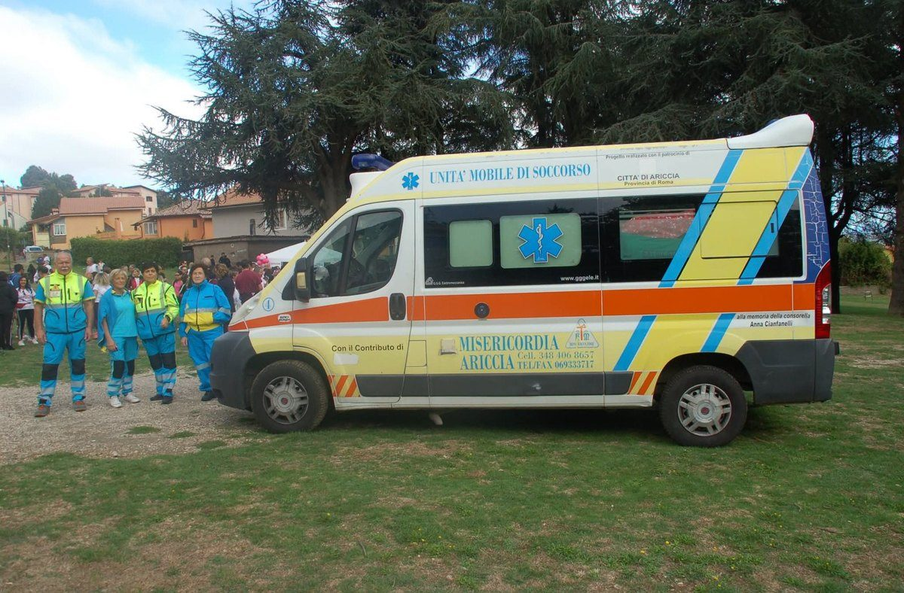

Chiamare aiuto, sapere dove sei, stare attenti in casa e in strada. Una lezione con i volontari della Misericordia di Ariccia.
Misericordia di Ariccia
Presentatevi: chi siete, che cosa fate. Dite subito che oggi si impara una cosa da grandi, senza paura: come chiedere aiuto. Chiedete chi conosce già il numero delle emergenze.
Il 112
Che cos'è il 112?
È il numero delle emergenze. Ti risponde una persona gentile, l'operatore, che manda l'ambulanza, i pompieri, la polizia o i carabinieri.
È gratis, risponde 24 ore su 24 e funziona anche da un telefono senza credito. Vale in tutta Europa.
Misericordia di Ariccia
Fate ripetere il numero alla classe. Spiegate che dietro al numero c'è una persona che vuole aiutare. La Regione Lazio ricorda che il 112 si chiama gratis da fisso e cellulare, anche senza SIM, con il telefono bloccato o senza credito.
Il 112
Quando si chiama?
Sì, è un pericolo vero
Una persona non risponde o non respira
Qualcuno si è fatto molto male
Un incidente
Un incendio o tanto fumo
No, non è un'emergenza
Per fare uno scherzo
Per sapere che tempo farà
Per chiedere un'informazione
Se ho perso un gioco
Se puoi, prima chiama un adulto vicino a te. Se non c'è nessuno, chiama tu il 112.
Misericordia di Ariccia
Chiedete ai bambini altri esempi e fateli votare: sì o no? Insistete sul «pericolo vero». La scheda «Che cosa dico al 112» ha un esercizio uguale da fare dopo.
Il 112
Il 112 non è un gioco
Nel Lazio 6 telefonate su 10 al 112 sono scherzi, errori o domande che non c'entrano. Intanto, chi sta male davvero aspetta.
Anche un telefono vecchio, senza scheda, chiama davvero il 112.
Hai chiamato per sbaglio? Non riattaccare: di' che è stato un errore.
In giallo, le chiamate per un pericolo vero.
Misericordia di Ariccia
Il dato «sei telefonate su dieci» è della Regione Lazio. Contate insieme i telefoni barrati. Spiegate che il telefono vecchio senza scheda non è un giocattolo: chiama davvero il 112.
Il 112
Che cosa dico al telefono
1Che cosa è successo e dove sei
2Il tuo nome
3Rispondi alle domande: servono a capire meglio
4Non riattaccare finché l'operatore non te lo dice
«La nonna è caduta e non si alza. Siamo in via… numero… ad Ariccia.»
Misericordia di Ariccia
Leggete l'esempio con calma. Ricordate che l'operatore fa domande per aiutare, non per sgridare: non bisogna avere paura di sbagliare.
Il 112
Proviamo, per finta
«112. Che cosa è successo?»
«C'è tanto fumo in cucina!»
«Dove sei?»
«In via Roma 10, a Genzano.»
«Come ti chiami?»
«Mi chiamo Luca.»
Ora tocca a voi: uno fa l'operatore, l'altro chiama, con un telefono finto.
Misericordia di Ariccia
Gioco di ruolo: il gioco, dicono i servizi 112 europei, aiuta a ricordare senza fare paura. L'indirizzo dell'esempio è di fantasia. Usate un telefono finto o di cartone, mai un telefono vero, nemmeno vecchio.
Il mio indirizzo
Lo sai a memoria?
Per trovarti, i soccorsi hanno bisogno di tre cose:
1la via o la piazza
2il numero di casa
3il paese o la città
Compito: impara il tuo indirizzo con un adulto di casa.
Misericordia di Ariccia
Non chiedete ai bambini di dire il loro indirizzo davanti alla classe: è un dato personale. La scheda «Il mio indirizzo» si completa a casa con un adulto e resta a casa. Ai più grandi potete dire che, se ci sono, servono anche scala, piano e nome sul citofono.
Il 112
Il trucco per ricordarlo
1 pollice sinistro
1 pollice destro
2 tutti e due insieme
L'11 febbraio, cioè l'11/2, è la giornata del 112.
Misericordia di Ariccia
Fate alzare i pollici a tutta la classe, tre volte, dicendo «uno, uno, due». Il trucco viene dalla Commissione europea.
I numeri amici
Ci sono anche i numeri amici
114Emergenza infanziaSe un bambino o un ragazzo è in pericolo o in difficoltà. Gratis, giorno e notte, anche in chat.
1.96.96Telefono AzzurroSe sei triste, hai paura o hai bisogno di parlare con qualcuno. Gratis, 24 ore su 24.
Misericordia di Ariccia
Il 114 è il servizio pubblico del Dipartimento per le politiche della famiglia, gestito da Telefono Azzurro; l'1.96.96 è la linea di ascolto di Telefono Azzurro. Dite che parlare con un adulto di fiducia, a casa o a scuola, è sempre la prima cosa.
Sicuri in casa
Sicuri in casa
Medicine e detersivi non si toccano: chiama un adulto.
In cucina, lontano dai fornelli. Il manico delle pentole va girato verso il muro.
Mai le dita o gli oggetti nelle prese della corrente.
Non si sale su sedie e mobili vicino a finestre e balconi.
Misericordia di Ariccia
I consigli vengono dalla guida «Casa sicura» pubblicata da EpiCentro, Istituto Superiore di Sanità: prese protette, manico delle pentole verso il muro, medicine e detersivi chiusi e in alto, niente sedie sotto le finestre, fiammiferi e accendini non lasciati in giro. Poi fate la scheda «Trova i pericoli in casa».
Sicuri in strada
Sicuri in strada
A piedi: si attraversa sulle strisce pedonali, dopo essersi fermati a guardare bene da una parte e dall'altra.
In macchina: la cintura si allaccia sempre, anche per pochi metri.
Finché non sei alto un metro e mezzo, viaggi sul seggiolino o sul rialzo giusto per te. Lo dice la legge.
Misericordia di Ariccia
Codice della strada: articolo 190 per i pedoni (si usano gli attraversamenti pedonali), articolo 172 per cinture e seggiolini (sotto 1,50 metri un sistema di ritenuta adatto al peso). Conta la statura, non l'età. La scheda «Sicuri in strada» ha il gioco «Misurati!».
Chi siamo
I volontari della Misericordia di Ariccia

Dal 1994 aiutiamo chi ha bisogno, ai Castelli Romani.
Accompagniamo in ambulanza le persone malate e chi ha una disabilità.
Diamo cibo e ascolto alle famiglie in difficoltà.
Insegniamo il primo soccorso ai grandi.
In un'emergenza non si chiama noi: si chiama sempre il 112.
Misericordia di Ariccia
La Confraternita di Misericordia di Ariccia è un'associazione di volontariato attiva dal 1994: trasporti sanitari e sociali programmati, anche per persone con disabilità, Banco Alimentare e Centro di Ascolto, assistenza sanitaria agli eventi, corsi di primo soccorso. Non fa il soccorso in emergenza: quello lo manda il 112. Se c'è un volontario in classe, può raccontare una giornata di servizio.
Quiz lampo
Chi lo sa? Alzate la mano!
1. Qual è il numero delle emergenze?
A911B112C1-2-3
2. Al telefono, che cosa dico per prima cosa?
AChe cosa è successo e dove sonoBQuanti anni ho
3. Trovo delle pastiglie colorate sul tavolo. Che cosa faccio?
ALe assaggioBNon le tocco e chiamo un adulto
Misericordia di Ariccia
Risposte: 1 B, 2 A, 3 B. Il quiz completo di dieci domande è nel PDF «Il quiz del piccolo soccorritore» e, da fare alla lavagna, nella pagina «Per bambini e scuole» del sito.
Piccoli soccorritori
Bravi! Adesso siete piccoli soccorritori
Tre cose da fare a casa:
1Insegna il trucco dei pollici a qualcuno di casa
2Impara il tuo indirizzo a memoria
3Appendi il cartellino del 112 sul frigorifero
Che Iddio ve ne renda merito!
Misericordia di Ariccia
Consegnate l'attestato del piccolo soccorritore, compilato con il nome di ogni bambino, e il cartellino del 112. «Che Iddio ve ne renda merito» è il ringraziamento tradizionale delle Misericordie.